Three families of texture
This lecture is a field guide to the shapes ore takes, and there are three families to keep separate in your head. Breccias are broken rock, and the way the pieces are broken, moved and cemented tells you what broke them. Ore classifications by abundance and layering (massive, semi-massive, disseminated, banded) tell you how much ore there is and whether it formed with its host rock. Veins are cracks that opened and filled, and their internal structure and cross-cutting relationships record a sequence of events. On top of all that, metamorphism can recrystallise and smear sulphides into new textures.
Why does this matter so much? Because textures carry timing. In the Tuena goldfield, an honours project identified five generations of veins, and only the last one carried the gold. If you can't tell which vein is which, you can't tell which one to follow. Every description you write in an ore suite is practice at this. slide 37 and lecture recording, 18 Sep
Breccias: broken rock, and who broke it
just means broken rock: fragments, usually angular, of rock or mineral grains (the ) set in a finer-grained or that may or may not resemble the clasts. In impact breccias it can even be glass. Breccias matter to us because they're everywhere in ore systems: some deposits sit entirely inside breccias, including solution-collapse deposits, some sediment-hosted uranium, many epithermal and porphyry deposits, and supergene iron and manganese ores. Broken rock is permeable rock, and fluids go where the permeability is.
The first-order split is by what did the breaking, and there are six options: sedimentary, structural (fault), magmatic, volcanic, hydrothermal and impact. Your job with any breccia is to work backwards from three observations: the shape and sorting of the clasts, how far they've moved and rotated, and what the matrix is made of. slides 2 and 3
Sedimentary breccias: chert and collapse
The simplest sedimentary breccias contain : half-lithified sediment torn up by a later current and dumped in the next layer. But the two that matter most by volume are chert breccias and solution-collapse breccias.
Chert breccias form during diagenesis, when quartz replaces carbonate. Both the clasts and the matrix are microcrystalline quartz and formed at the same time, so they're tied to dolomitic sequences, with brecciation driven by partial dissolution of underlying carbonate or by tectonics. In chert-dolomite sequences dolomite takes over from chert with depth, at around 1000 m. They form most readily in impure limestones. slides 5 to 7
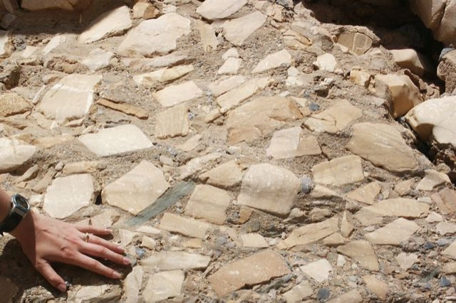
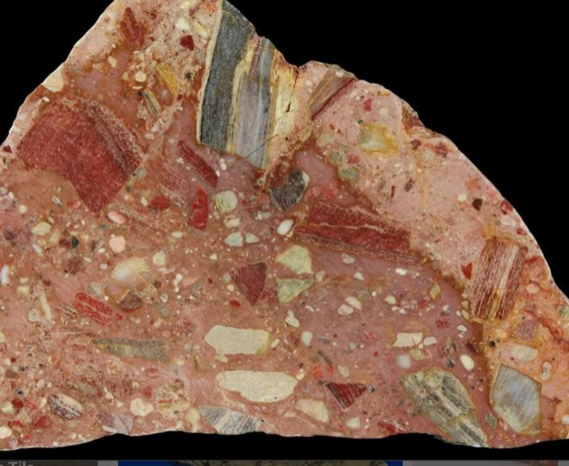
The slab has clasts of several colours and textures, and a red matrix. Is the red colour part of the breccia-forming process?
Show what I see
The different clast colours are different generations or textures of chert, all replacing carbonate. The red is almost certainly hematite from later weathering and oxidation, not part of the original brecciation. Always separate the event that made the texture from the events that stained it afterwards (Lecture 2).
Solution-collapse (karst) breccias form when groundwater dissolves a soluble layer underneath: evaporites (gypsum, anhydrite, halite, sylvite) or carbonates (dolomite, calcite). The insoluble rocks above lose their support and collapse. Look for three diagnostic features: V-shaped sags from cave-roof collapse, breccia pipes with inward-dipping beds, and sharp, flat bases where the dissolved layer used to be. They're the classic host for Mississippi Valley type (MVT) lead-zinc, because the collapse creates exactly the open, permeable plumbing that later ore fluids fill. Watch one form.
Dissolve the evaporiteready
A layer of gypsum sits under insoluble sandstone and shale. Press the button.
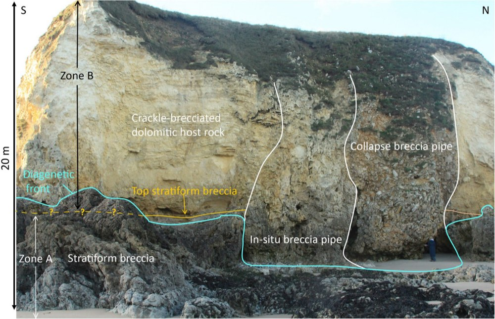
Find the features from the animation in this real quarry face. Which labelled body shows inward-dipping, collapsed beds, and where would you expect the flat base?
Show what I see
The collapse breccia pipes on the right are the V-shaped, chaotic bodies where roof rock fell in. The in situ breccia pipe has broken but barely moved. At the base, the stratiform breccia marks the level of the dissolved layer: a flat, sharp floor. Compare the animation: same geometry, real rock.
Fault breccias: crackle, mosaic, chaotic
Fault (structural) breccias form in the upper crust by grinding between two fault blocks. They're classified by how much the clasts have moved, which you can measure: the proportion of large clasts (over 2 mm) and how well they still fit together. A crackle breccia has barely rotated and is 75 to 100 per cent large clasts. A mosaic breccia has more separation and rotation, 60 to 75 per cent. A chaotic breccia has lost all geometric fit, 30 to 60 per cent. Crackle breccias can be split further by how they cracked: attrition (progressive frictional wear), distributed crush (progressive microfracturing) and implosion (high pore-fluid pressure). slides 10 and 13
A is the special case where the process is almost pure dilation: the pieces moved apart but didn't rotate, so they fit back like a puzzle, and the gaps fill with minerals later. That was the Mount Gunson sample at the top. Push the strain up and watch the classification change.
Breccia strain machinecrackle
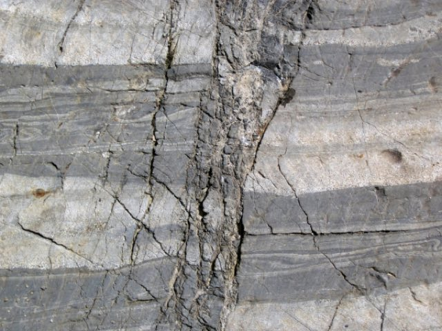
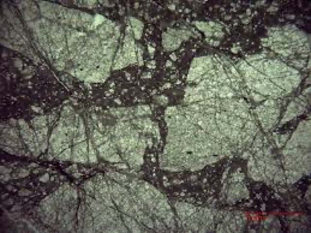
In A, how do you know the broken zone is a fault and not a sedimentary breccia? Classify B.
Show what I see
A: the broken zone cuts straight across the shale-sandstone bedding as a narrow, steep band, and the beds either side are intact. That geometry says fault movement. B: the pale blocks are large, angular and still nearly fit together, with only thin seams of matrix between them: a crackle breccia, very little rotation.
Magmatic and volcanic breccias
Magmatic breccias form inside a magma that's crystallising but not yet solid. It fractures in a plastic state, either because volatiles are exsolving as it rises or because the chamber is being moved by tectonics. The escaping fluids can drop ore minerals as they depressurise and react with wall rock, so these are common in epithermal and porphyry systems. slide 15
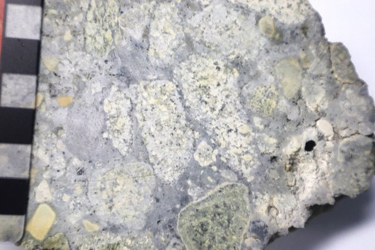
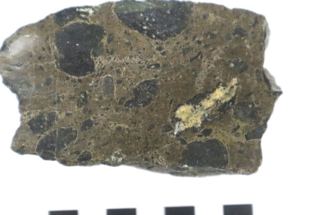
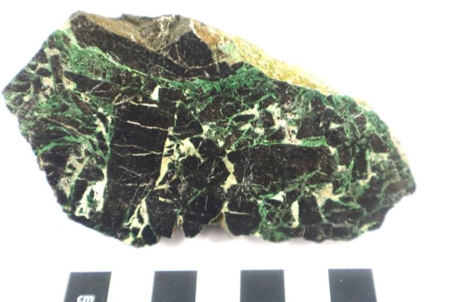
Two of these have a matrix that was itself molten. Which two, and what's the green cement in C?
Show what I see
- A: subrounded andesite clasts, some with reaction rims: they were broken while the magma was still partly liquid and reacted with it.
- B: well-rounded clasts of the host norite in a matrix of sulphide. The sulphide was a melt too, a separate sulphide liquid, so the matrix was molten.
- C: chromitite broken while still in a magmatic state, then cemented by later fluids that grew green uvarovite (chromium garnet) and grossular.
So A and B had molten matrices. C's cement came later, from fluids. Rounded clasts and reaction rims are your clue to a hot, magmatic setting.
Volcanic breccias are mostly angular volcanic fragments over 2 mm in a finer matrix (or non-volcanic fragments in a volcanic matrix). They come in three groups, and you can sort them by the energy source.
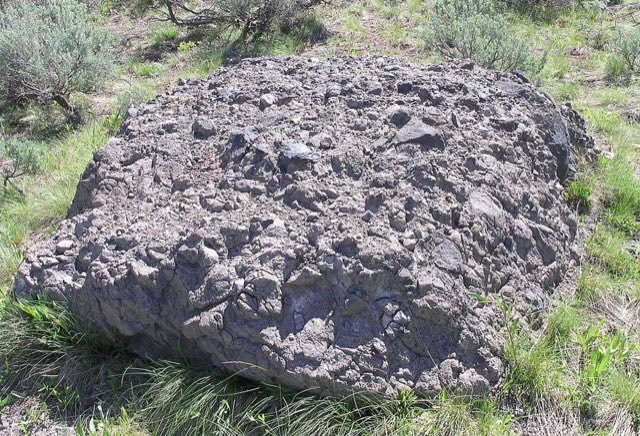
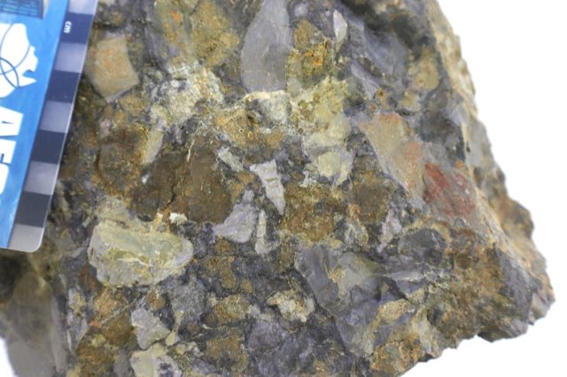
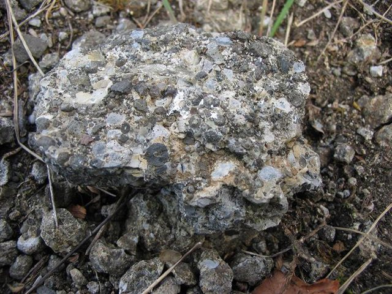
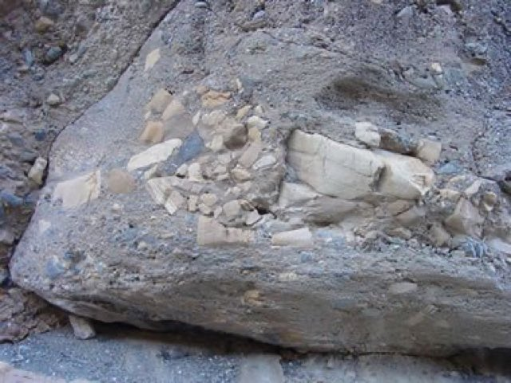
Which one was driven by gravity rather than heat, and what's odd about the clasts in B?
Show what I see
D is the gravity one: huge range of clast sizes, very poorly sorted, a debris flow (epiclastic). B is a phreatic breccia: lava hit groundwater, the steam blast shattered the country rock, and the mix was injected upwards as a breccia dyke. That's why most of B's clasts are country rock, not volcanic. A is a block breccia from a lava flow breaking itself up, and C is pyroclastic: many rock types in an ash matrix.
Hydrothermal breccias: rock blown apart by its own fluid
Hydrothermal breccias form by . Highly pressurised fluid exsolves and builds pressure inside fractures. Rock is held together by the confining stress around it, but what actually matters is the : confining stress minus fluid pressure. As fluid pressure climbs, effective stress drops towards zero, and once fluid pressure beats the confining stress plus the rock's small tensile strength, fractures propagate, often explosively. Near the surface the confining stress is low, so it takes less pressure; and if the system suddenly depressurises (boiling, a fault opening), the expanding fluid blasts the rock apart. The matrix is typically quartz, carbonate or , and the clasts are usually altered, because the same fluid that broke them reacts with them. slide 24 and lecture recording, 18 Sep
Pressure cookerintact
Pick a depth, then build fluid pressure.
Teaching model: confining stress taken as lithostatic, about 27 MPa per km, plus 10 MPa tensile strength.
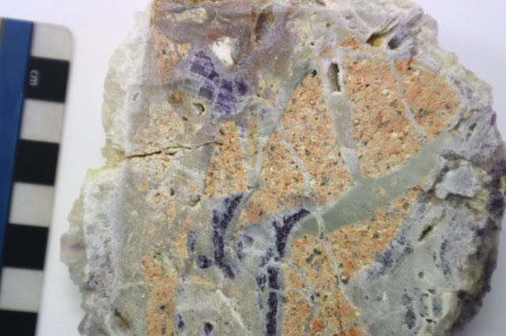
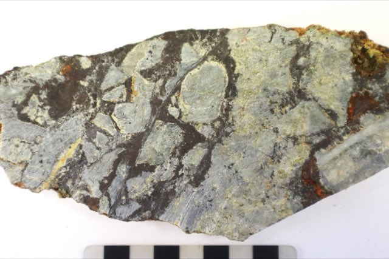
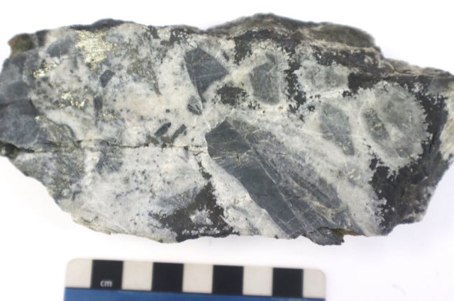
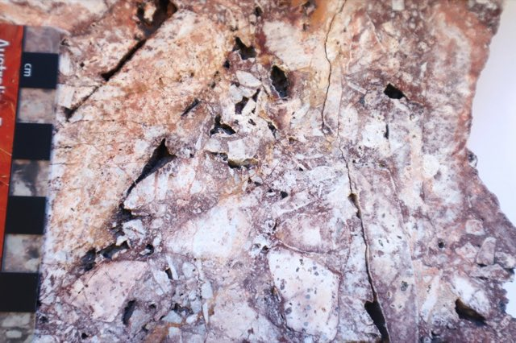
In which of these is the cement itself ore? And in D, what is the matrix made of?
Show what I see
- A: granite blasted apart, cemented by fine silica (chalcedony) and purple fluorite carried by the escaping volatiles.
- B: granite clasts cemented by sphalerite: the cement is the ore. The clasts are visibly altered.
- C: quartz crystals nucleated around the clasts, then stibnite (antimony sulphide, the ore) filled the gaps.
- D: a milled-matrix breccia: highly altered granite clasts in granite that was itself crushed to powder by the fluid, with former sulphides now oxidised to goethite.
B and C have ore as cement. Some epithermal deposits are hosted entirely in breccia rather than veins; Kelian in Kalimantan is the classic example.
Impact breccias
When an extraterrestrial body hits, it can melt the surface into a glassy impact breccia, and its shock wave can melt rock deep in the crust almost instantly, freezing it as ("false glass"), dark veins injected through shattered rock. The Vredefort Dome in South Africa is the best example: granite that crystallised around 10 km down was partly melted by the shock. Impact breccias are almost never ore-related, with one famous Canadian exception you'll meet in the magmatic deposits lectures. slide 27 and lecture recording
Breccia ID challenge
Nine real samples from the lecture. Use clast shape and sorting, rotation, and matrix to classify each. Read the hint if you're stuck; it'll tell you what to look at, not the answer.
What broke this rock?0 / 9
Massive, semi-massive, disseminated
The simplest ore classification is how much of the rock is ore mineral, applied at deposit, lens and hand-specimen scale. Massive ore is over 50 per cent ore minerals, semi-massive is 10 to 50 per cent, and disseminated is under 10 per cent. Most mines take massive and semi-massive ore; disseminated material is usually treated as waste like the host rock. The big exceptions depend on the commodity. Gold is almost always disseminated because you can't see it, and at Thackaringa disseminated pyrite is the target because it carries a few per cent cobalt. slides 28 to 32
Estimating percentages by eye is a real field skill, and most people overestimate. Calibrate your eye here first.
Visual estimation chartsemi-massive
Drag to see what each percentage looks like.
Classify the ore0 / 6
Banded ores: the strongest clue to syngenetic ore
Banded or layered ores have relatively continuous bands of a single ore mineral, or bands dominated by one. When you see them, think : the sulphide settled at the same time as the host sediment. They're most common in SEDEX deposits like Mount Isa and Lady Loretta, where sulphides accumulated in a confined basin with the muds, and in VMS deposits, where fine sulphide grains rained down from black smokers onto the seafloor. slide 33
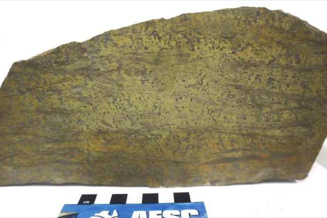
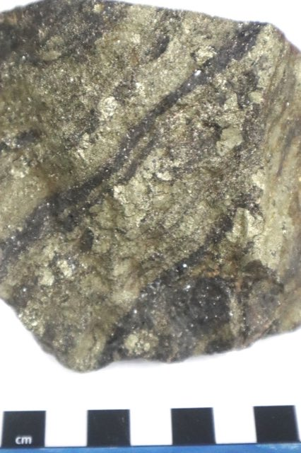
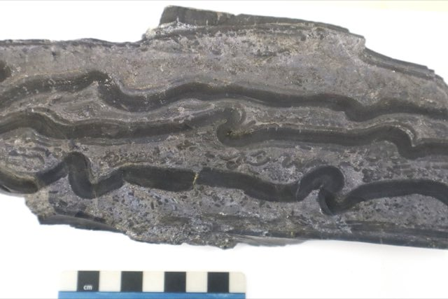
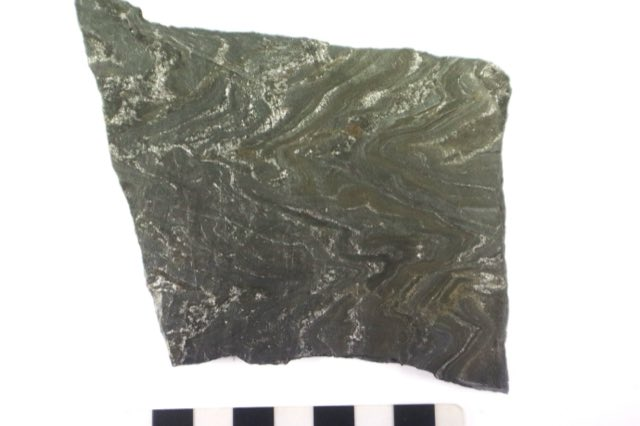
The bands in C are folded. Does that mean the ore was deformed by later tectonics?
Show the reasoning
Not necessarily. At Mount Isa the galena-sphalerite bands and the shale between them are folded together in small, soft-sediment folds caused by compaction while the mud was still wet. The sulphide and the shale were behaving as one wet sediment, which is more evidence that they formed together. Tectonic folds would also deform later veins and would have a consistent axial plane across the outcrop.
Veins: cracks that opened and filled
A is a fracture that was dilated (pulled apart) and then filled with minerals. Vein geometry is controlled by the regional and local stress field at the time it formed, and multiple generations are normal in orogenic gold, epithermal and porphyry systems. Only one or two generations may carry ore, so describe every vein properly: geometry (planar, sinuous), width and spacing, continuity (continuous, semi-continuous, discontinuous), orientation relative to bedding or structure, and mineralogy. slide 37
One rule underpins all vein textures: the walls crystallise first and the centre last, because the centre is always the weakest part and keeps reopening. Watch three different vein types grow.
Vein growthcrack-seal
The vein types, with real samples
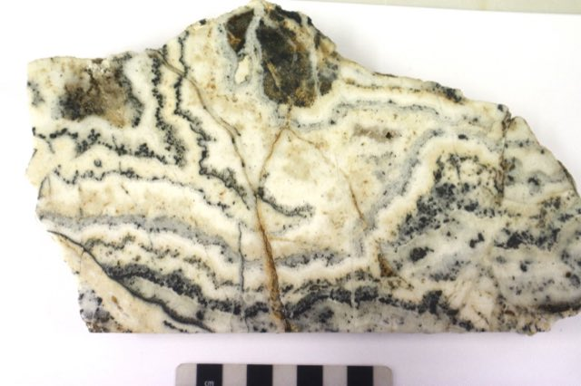
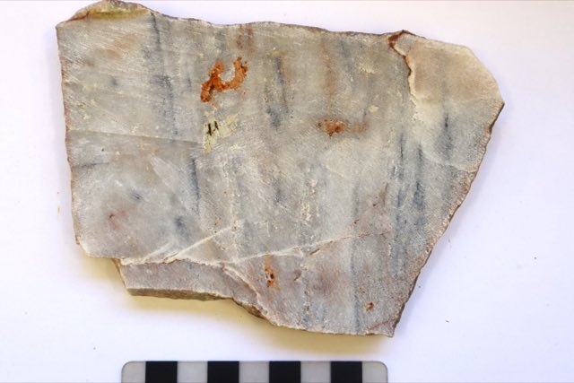
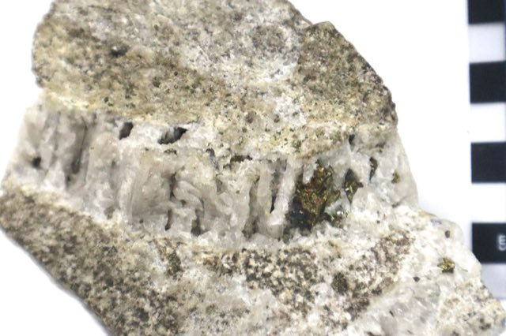
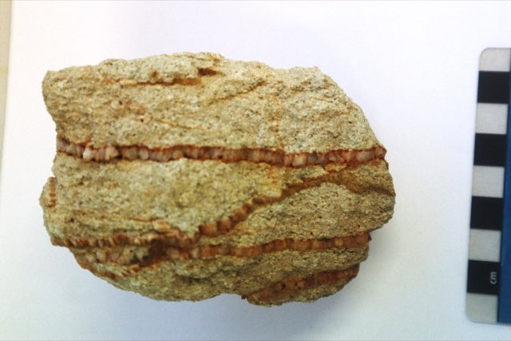
Which two are crack-seal veins, and which way are the crystals pointing in C?
Show what I see
A and B are laminated crack-seal veins: open, seal, open, seal, many times over. In A the dark laminae are molybdenite. B is a classic vein from an epithermal system: colourless quartz, off-white ankerite and sooty black sulphide bands. That sample ran around 1500 g/t silver and 150 g/t gold. Find ginguro banding while exploring an epithermal system and you get very excited. C and D are extensional: planar, with crystals grown perpendicular to the vein walls because the rock simply pulled apart. In C, chalcopyrite, bornite and gold filled in later.
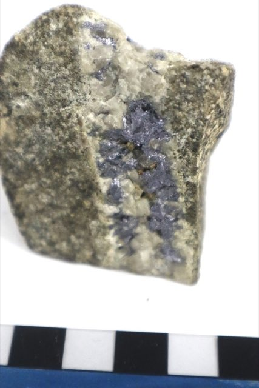
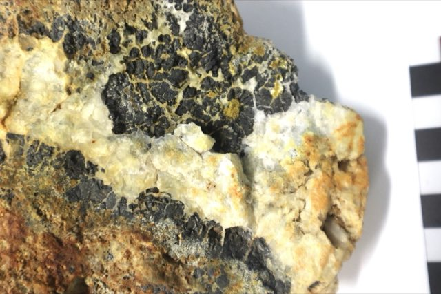
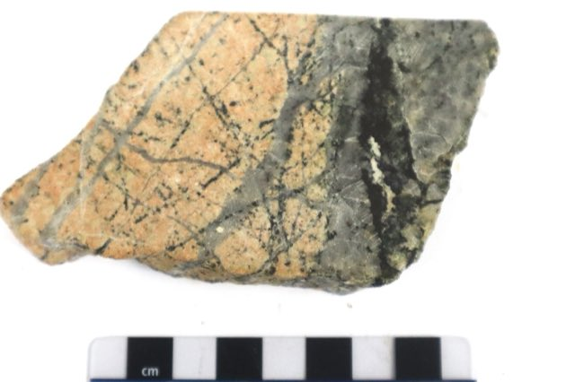
A and B are both space-fill veins, but their order is opposite. Explain, then say why companies love C.
Show what I see
A follows the usual order: quartz lined the walls first and molybdenite filled the open centre later. B is reversed: euhedral sphalerite crystals grew first into open space, and quartz filled around them afterwards. You can tell because the sphalerite has crystal faces, which only grow into open space. C is a stockwork: many crossing veins of early quartz and later quartz-chalcocite in brecciated, altered monzonite. Lots of veins means lots of separate mineralising pulses, which is exactly what makes porphyries and epithermal systems big. They form by intense hydrofracturing as overpressured fluid exsolves close to the surface.
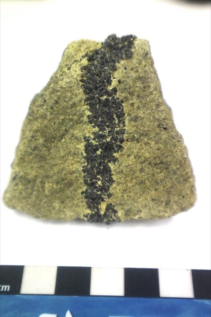
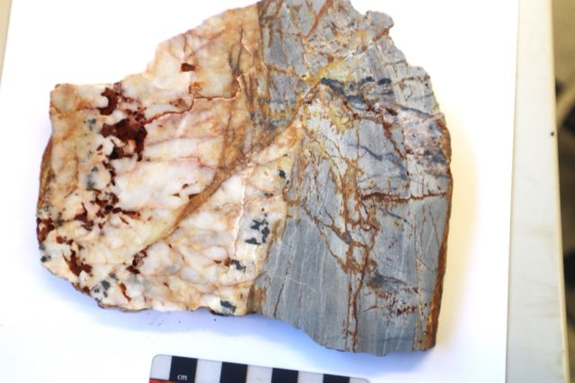
A isn't hydrothermal at all. How did a chromitite vein form in dunite? And what's the sequence in B?
Show what I see
A is a magmatic vein: dense chromite crystals segregated and aggregated into a monomineralic vein within the silicate host. Magmatic veins are rare; chromitite in dunite and pyrrhotite-pentlandite in ultramafic rock are the usual cases. B records two events: extension opened a large quartz-cassiterite vein, then later shearing cut a shear vein across it.
Reading cross-cutting order
Relative timing uses two rules you already know from first year. A feature that cuts another is younger. A feature that offsets another moved after it formed. Add a third for ore textures: clasts are older than the matrix that surrounds them. With those three rules you can line up a vein history. Try it on this slab.
Oldest to youngestclick the features in order
Start with the oldest thing in the slab.
Metamorphism and durchbewegung
Heat and pressure don't just leave sulphide ores alone. During metamorphism they're remobilised both physically (dislocation flow along grain boundaries) and chemically (dissolving and reprecipitating in fluid). The sweet spot is 350 to 500 °C, upper greenschist to lower amphibolite facies. Remobilised ores are usually much coarser grained than the original sulphides, which is the easiest way to spot them, and remobilisation can make spectacular high-grade offshoots. The Consols mine at Broken Hill was a completely remobilised orebody, with masses of pure silver over a tonne in weight. slide 47 and lecture recording, 21 Sep
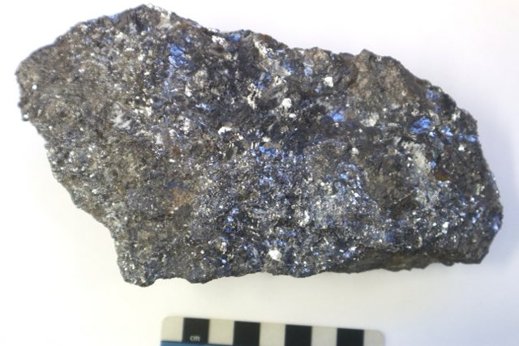
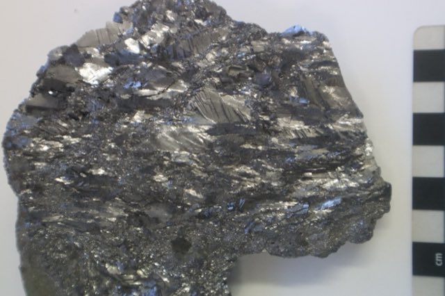
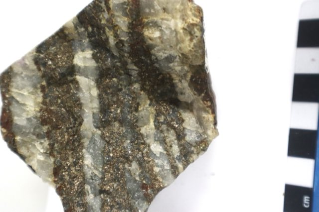
What does each tell you about what metamorphism did?
Show what I see
- A: very coarse, recrystallised galena-sphalerite. Coarse grain size is the giveaway for remobilisation.
- B: highly strained, ribbon-like galena stretched during deformation: galena flows ductilely.
- C: this was a banded iron formation of hematite and chert. Metamorphism, with sulphur introduced, converted the hematite to pyrrhotite and recrystallised the chert to coarse quartz. The banding survived; the minerals didn't.
Most sulphides behave ductilely under greenschist conditions and flow like toothpaste; pyrite is the stubborn exception and stays brittle. When the host rock or old quartz veins are brittle and the sulphide matrix is ductile, deformation snaps off fragments of the brittle material and rolls them around inside flowing sulphide. That's texture, first described by Frank Vokes in 1969 from metamorphosed VMS deposits in northern Norway: rigid, rotated clasts (usually siliceous host rock or vein quartz) in a matrix of ductile sphalerite and galena. Compare the two behaviours.
Shear the oregalena matrix
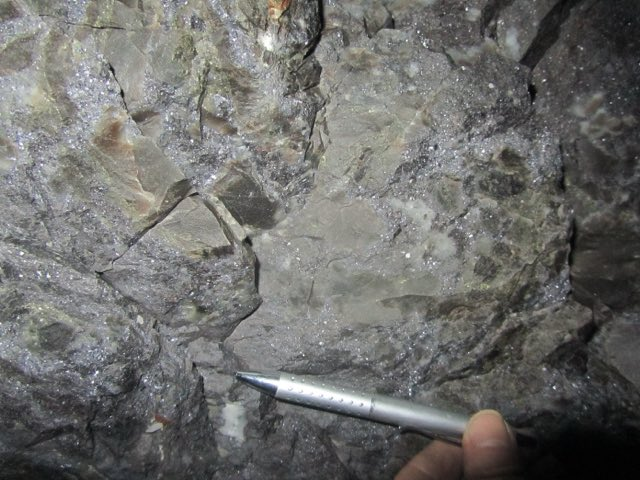
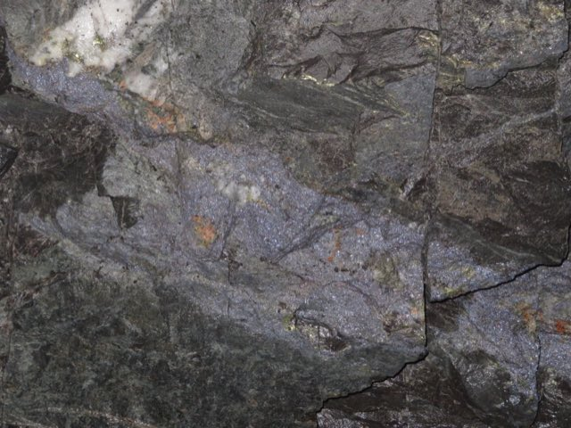
B contains orange garnet in quartz clasts, inside fine galena. Why is garnet a surprise in a sulphide vein, and what does it tell you?
Show the reasoning
Garnet needs high temperature. These quartz-garnet clasts formed deeper in the deposit, in hotter skarn conditions, then were broken off and carried up a shear vein inside ductile, fine-grained galena. So one sample records an early hot event, a later deformation, and the galena flowing around the debris. A shows the same texture with bleached siltstone clasts in sphalerite-galena.
Core from the Cobar Basin: putting it together
Time to read real core the way you will in the labs. Hera, near Nymagee in central NSW, is a Devonian zinc-lead-silver-gold deposit in a turbidite sequence (alternating siltstone and fine sandstone), structurally controlled and deformed four times (D1 to D4). It also has localised high-temperature skarn (garnet, wollastonite, diopside, above 600 °C) overprinted by pervasive low-temperature skarn (tremolite). Federation, 6 km south, is similar but simpler: no skarn, and much of the ore is massive. slides 53 and 60
Sphalerite (ZnS) takes iron into its structure, and the more iron, the darker it gets. Honey-yellow sphalerite is low-iron, red is moderate-iron, and dark brown to black is high-iron. Iron content in sphalerite tracks the conditions it formed under, so the colour you see in core is real data. Note it every time.
Log the core0 / 8
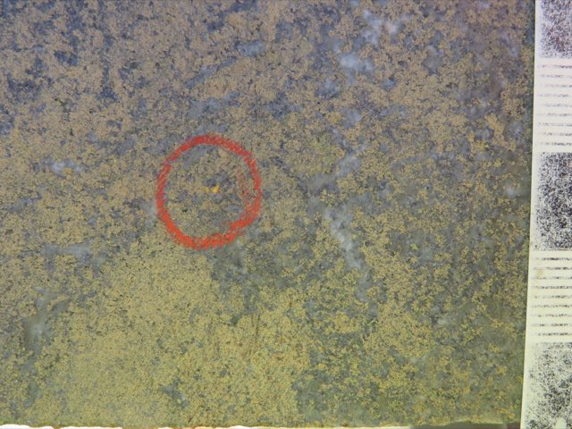
The red circle marks visible gold at Federation. What's it sitting in, and why is that useful to know when logging?
Show what I see
Very low-iron, honey-coloured sphalerite with almost no sign of deformation. Gold at Federation tends to sit with this honey sphalerite and with quartz-sphalerite-galena veins, so when you're logging, honey sphalerite is a cue to look harder with a hand lens. Deposits often have localised zones of high strain or of a particular assemblage, which is why you look at every scale.
Where this goes next
Lecture 4 takes these same textures under the microscope in reflected light, where you'll identify the ore minerals and their intergrowths properly. Lecture 5 explains the stress fields that open veins and drive fault breccias. And the SEDEX and VMS lectures (L9, L10) come back to banded ore in detail.
Self-test
Answer out loud or on paper before you open each one. Claim the ounces if you got it.
Glossary and flashcards
Terms this lecture assumes or defines quickly. The dotted words in the text open them in place.